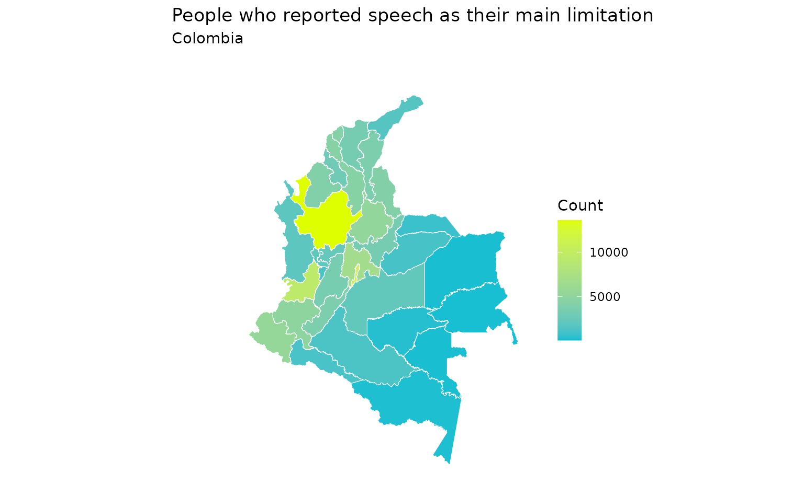

Integration of Geospatial and Demographic data
Source:vignettes/merge_geo_dem.Rmd
merge_geo_dem.RmdAs you know, ColOpenData can be used to access both
geospatial
and demographic
data from Colombia, in independent modules. However, we thought it would
be helpful to present a module that incorporates a way to merge
information between geospatial and demographic data. In this vignette
you will learn how to use the function
merge_geo_demographic().
Disclaimer: all data is loaded to the environment in the user’s R session, but is not downloaded to user’s computer.
How to merge geospatial and demographic data
Documentation access
Geospatial and demographic data can be merged based on the spatial aggregation level (SAL). While geospatial data can be aggregated down to the block level, demographic data is typically available only at the department and municipality levels. Therefore, these are the only SAL that can be accessed in both types of data for merging.
Now, the merge_geo_demographic() function takes two
parameters: the demographic dataset and the column of interest in the
demographic dataset. To use the function correctly, it’s important to
review the demographic dataset we intend to work with and their
respective SAL. Therefore, we should first access the demographic
documentation.
# Available demographic datasets
datasets_dem <- list_datasets("demographic")
# Available demographic datasets at the department level
department_datasets <- datasets_dem[datasets_dem$level == "department", ]
head(department_datasets)
#> name group source year level category
#> 11 DANE_CNPVH_2018_1HD demographic DANE 2018 department households
#> 13 DANE_CNPVH_2018_2HD demographic DANE 2018 department households
#> 15 DANE_CNPVH_2018_3HD demographic DANE 2018 department households
#> 17 DANE_CNPVPD_2018_1PD demographic DANE 2018 department persons_demographic
#> 20 DANE_CNPVPD_2018_3PD demographic DANE 2018 department persons_demographic
#> 22 DANE_CNPVPD_2018_4PD demographic DANE 2018 department persons_demographic
#> description
#> 11 Number of households with persons under 15 years of age and number of persons under 15 years of age, by department and area
#> 13 Number of households with senior citizens and number of persons aged 60 and over, by department and area
#> 15 Households by headship, by department and area
#> 17 Total census population, by department, area, age group, masculinity and femininity indexes, and sex
#> 20 Total census population, by department, age group, age, area and sex
#> 22 Census population in particular households, by relationship or kinship to the head of household, by department, area and sexAfter reviewing the available datasets, we can select the one we wish to work with and take a closer look. For instance, let’s suppose we choose the dataset “DANE_CNPVPS_2018_4PD”.
# Download demographic dataset
chosen_data <- download_demographic("DANE_CNPVPS_2018_4PD")
#> Original data is retrieved from the National Administrative Department
#> of Statistics (Departamento Administrativo Nacional de Estadística -
#> DANE).
#> Reformatted by package authors.
#> Stored by Universidad de Los Andes under the Epiverse TRACE iniative.
head(chosen_data)
#> codigo_departamento departamento area uso_de_ayudas_permanentes
#> 1 00 Total nacional total total
#> 2 00 Total nacional total total
#> 3 00 Total nacional total total
#> 4 00 Total nacional total usa_ayudas_permanentes
#> 5 00 Total nacional total usa_ayudas_permanentes
#> 6 00 Total nacional total usa_ayudas_permanentes
#> limitacion_que_mas_afecta_el_desempeno_de_la_persona
#> 1 total_personas_que_tienen_alguna_dificultad_que_le_afecta_el_desempeno_diario
#> 2 total_personas_que_tienen_alguna_dificultad_que_le_afecta_el_desempeno_diario
#> 3 total_personas_que_tienen_alguna_dificultad_que_le_afecta_el_desempeno_diario
#> 4 total_personas_que_tienen_alguna_dificultad_que_le_afecta_el_desempeno_diario
#> 5 total_personas_que_tienen_alguna_dificultad_que_le_afecta_el_desempeno_diario
#> 6 total_personas_que_tienen_alguna_dificultad_que_le_afecta_el_desempeno_diario
#> sexo total
#> 1 total 3134036
#> 2 hombre 1441424
#> 3 mujer 1692612
#> 4 total 2453623
#> 5 hombre 1065678
#> 6 mujer 1387945chosen_data presents information regarding disabilities
and main limitations in activities in the column
“limitacion_que_mas_afecta_el_desempeno_de_la_persona”.
# Download demographic dataset
column <- "limitacion_que_mas_afecta_el_desempeno_de_la_persona"
merged_data <- merge_geo_demographic("DANE_CNPVPS_2018_4PD", column)
#> Original data is retrieved from the National Administrative Department
#> of Statistics (Departamento Administrativo Nacional de Estadística -
#> DANE).
#> Reformatted by package authors.
#> Stored by Universidad de Los Andes under the Epiverse TRACE iniative.
head(merged_data)
#> Simple feature collection with 6 features and 17 fields
#> Geometry type: MULTIPOLYGON
#> Dimension: XY
#> Bounding box: xmin: -77.12783 ymin: 3.730633 xmax: -71.94885 ymax: 11.10537
#> Geodetic CRS: WGS 84
#> codigo_departamento departamento version area latitud longitud
#> 1 05 Antioquia 2018 62804708983 6.922796 -75.56499
#> 2 08 Atlántico 2018 3315752105 10.677010 -74.96522
#> 3 11 Bogotá, D.C. 2018 1622852605 4.316108 -74.18107
#> 4 13 Bolívar 2018 26719196397 8.745271 -74.50864
#> 5 15 Boyacá 2018 23138048132 5.776607 -73.10207
#> 6 17 Caldas 2018 7425221672 5.342066 -75.30688
#> total_personas_que_tienen_alguna_dificultad_que_le_afecta_el_desempeno_diario
#> 1 441370
#> 2 96518
#> 3 458088
#> 4 88009
#> 5 102455
#> 6 81734
#> oir_la_voz_o_los_sonidos hablar_o_conversar ver_de_cerca_de_lejos_o_alrededor
#> 1 36217 13612 153118
#> 2 6716 4211 41701
#> 3 42303 10880 167166
#> 4 6275 4393 36220
#> 5 10351 3276 33945
#> 6 8191 2343 27627
#> mover_el_cuerpo_caminar agarrar_o_mover_objetos_con_las_manos
#> 1 130419 19976
#> 2 24371 2839
#> 3 125425 22925
#> 4 23203 2936
#> 5 32345 3975
#> 6 24873 3694
#> aprender_recordar_tomar_decisiones_por_si_mismo
#> 1 36670
#> 2 8686
#> 3 34646
#> 4 7249
#> 5 6029
#> 6 5755
#> comer_vestirse_banarse_por_si_mismo
#> 1 2882
#> 2 887
#> 3 3590
#> 4 707
#> 5 727
#> 6 480
#> relacionarse_o_interactuar_con_las_demas_personas
#> 1 4982
#> 2 1216
#> 3 5202
#> 4 822
#> 5 878
#> 6 773
#> hacer_las_tareas_diarias_sin_mostrar_problemas_cardiacos_respiratorios
#> 1 43156
#> 2 5737
#> 3 45447
#> 4 6148
#> 5 10866
#> 6 7918
#> sin_informacion geometry
#> 1 338 MULTIPOLYGON (((-76.41355 8...
#> 2 154 MULTIPOLYGON (((-74.84946 1...
#> 3 504 MULTIPOLYGON (((-74.07419 4...
#> 4 56 MULTIPOLYGON (((-76.17318 9...
#> 5 63 MULTIPOLYGON (((-72.17368 7...
#> 6 80 MULTIPOLYGON (((-74.67154 5...merged_data presents geospatial information related to
departments, as well as the information related to main limitations
among the population. We can use this dataset to plot the number of
people by department that have a certain limitation, for example,
speech, which is now reported under “hablar_o_conversar”.
ggplot(data = merged_data) +
geom_sf(mapping = aes(fill = hablar_o_conversar), color = "white") +
theme_minimal() +
theme(
panel.grid = element_blank(),
axis.text = element_blank(),
axis.ticks = element_blank()
) +
scale_fill_gradient("Count", low = "#10bed2", high = "#deff00") +
ggtitle(
label = "People who reported speech as their main limitation",
subtitle = "Colombia"
)